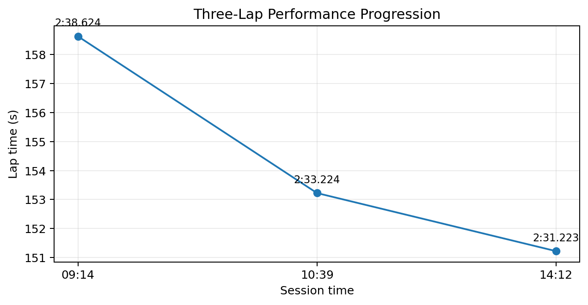
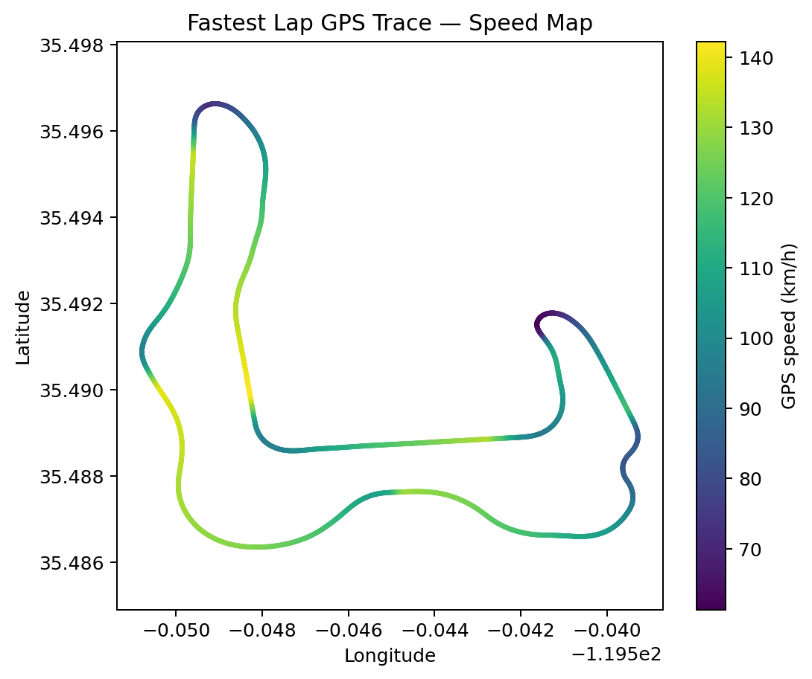
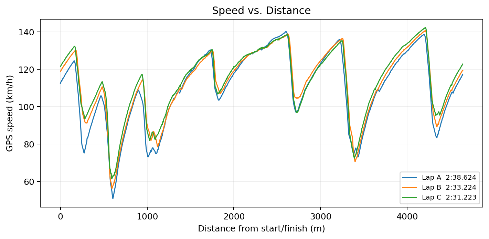
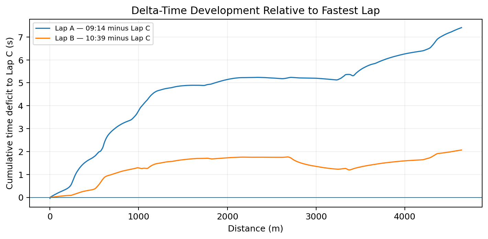
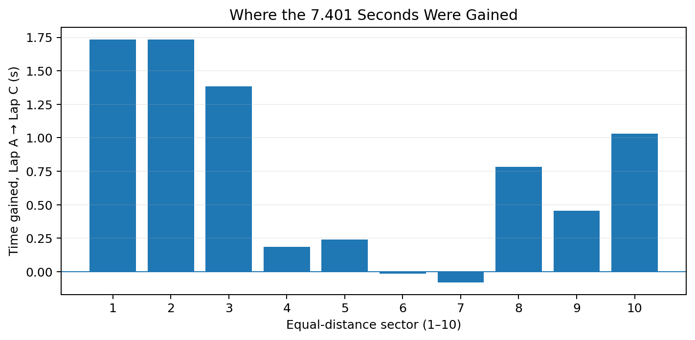
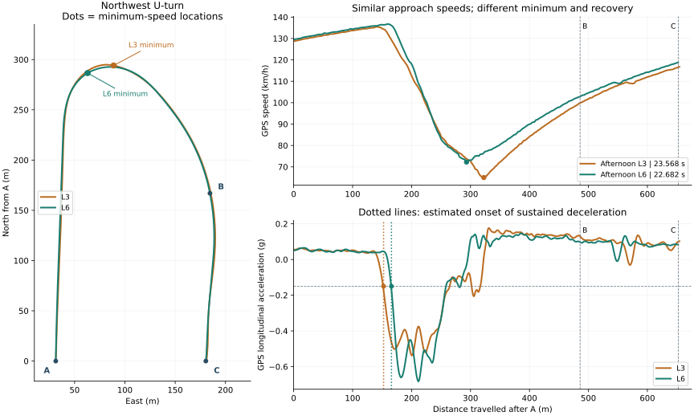
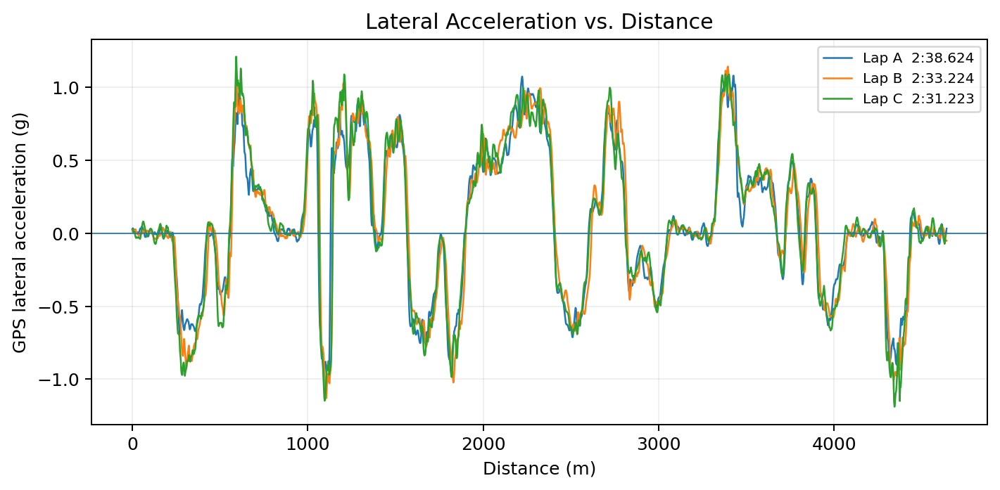
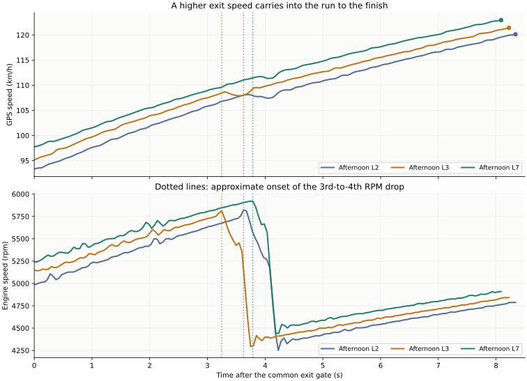

The Question
My first track experience led to a question I explored in more detail after driving:
Could I use vehicle telemetry to understand why I was improving—and then use that understanding to make my driving better?
I had spent time practicing in racing simulators, but real driving immediately felt different. The physical forces, braking confidence, tire grip, and consequences of every decision were no longer simulated.
Instead of relying only on how a lap felt, I wanted to measure what was actually happening.
This report is a retrospective comparison and a plan for a future experiment.
1. OBSERVE — From Simulation to Reality
During training, I began to notice that top speed alone could not explain how quickly I completed a lap. Speed through the corners, especially at the exit, mattered too.
During my sessions at Buttonwillow Raceway Park, I noticed that I was becoming more comfortable with the car. I could brake with more confidence, carry more speed into some corners, and better anticipate how the car would respond.
But those were subjective impressions.
I wanted objective evidence.
So I began thinking about driving as a dynamic system rather than simply a sport.
The car generates measurable outputs—speed, acceleration, RPM, position, lateral acceleration—and my decisions as a driver influence those outputs.
After driving, I turned those observations into a question for the data:
How can vehicle telemetry be used to identify, quantify, and verify improvements in driving performance?
2. MEASURE — Building the Dataset
The driving was recorded with an AiM telemetry system; Hicks Motorsports provided the data used here.
For this analysis, I selected three representative laps from three sessions on the same day:
Lap Session Lap Time
A Morning 2:38.624
B Late Morning 2:33.224
C Afternoon 2:31.223
The telemetry included:
GPS speed and position, longitudinal acceleration, lateral acceleration, RPM, calculated gear, and distance around the circuit.
Instead of comparing the laps only by total lap time, I aligned the telemetry by distance traveled around the track.
This allowed me to ask a much more useful question:
At exactly which parts of the track was I gaining or losing time?

3. ANALYZE — Finding the 7.401 Seconds
Between Lap A and Lap C, my lap time improved by:
7.401 seconds
or approximately:
4.67%
During training, I had already begun to question how much top speed explained. The later telemetry comparison gave me numbers to examine that idea.
My maximum GPS speed changed only from:
140.2 km/h → 142.3 km/h
But my average speed increased from:
105.4 km/h → 110.5 km/h
Even more interesting was minimum speed:
50.9 km/h → 61.3 km/h
This was one of the most important discoveries in the project.
The small change in maximum speed did not explain the improvement on its own. The corner-speed differences stood out, while exit speed and acceleration on the following straights remained part of the same question.

4. SPEED — Looking Beyond Top Speed
When I overlaid speed against distance, I could see that the fastest lap did not simply have a higher peak.
Instead, its speed trace remained higher through several important low-speed sections.
This gave numerical context to what I had noticed during training.
A car may spend only a short period near maximum speed, but every unnecessary reduction in corner speed affects not only the corner itself but also the acceleration zone that follows it.
I began to think less about “going faster” and more about preserving momentum.
During driving, I also noticed that reaching my usual upshift RPM sooner after a corner could help on the following straight. I mean reaching that RPM earlier in time through a better exit, not shifting at a lower RPM. The final-corner comparison in Section 9 examines that observation and why shift timing alone does not explain the result.

5. DELTA TIME — Locating Performance Loss
The analysis then compared cumulative time difference relative to my fastest selected lap.
This produced a delta-time trace.
Instead of saying:
“Lap C was 7.401 seconds faster.”
I could now ask:
“Where did those 7.401 seconds appear?”
The largest gains were concentrated in specific areas.
When I divided the approximately 4.64 km lap into ten equal-distance sectors, the first three sectors accounted for approximately:
4.86 seconds of improvement.
The final three sectors contributed approximately another:
2.27 seconds.
The middle of the lap changed relatively little.
In two sectors, my fastest overall lap was actually slightly slower.
That was important because it showed me that a personal-best lap is not necessarily an optimal lap.
There were still measurable weaknesses inside my fastest result.


6. RACING LINE — Comparing Two Paths
One of the clearest improvements occurred around a major slow-speed section approximately 0.61 km into the lap.
My minimum speed increased from approximately:
50.9 km/h → 61.3 km/h
Across the surrounding analysis window, this represented approximately:
1.43 seconds of improvement over the 0.47–0.78 km window.
Similar gains appeared around other major speed minima.
After driving, the AI-assisted path and speed comparison helped me develop my hypothesis that the uphill exit speed was related to the path. My coach had guided the line during training; the later visualization made its recorded shape and speed differences easier to examine.
This also gave me a more specific way to think about the corner:
The fastest corner is not necessarily the corner with the latest braking point.
The entire sequence matters:
Entry → rotation → minimum speed → exit → acceleration
Optimizing only one part can damage another.
7. BRAKING — Similar Lines, Different Speed Recovery
The uphill U-turn in Section 6 suggests a relationship between path and speed. The northwest U-turn offers a useful contrast: when the recorded lines are close, what else might explain a faster passage?
An AI-assisted review of all three exports found 23 passages through this corner. The six complete afternoon laps approached a fixed GPS gate, A, at about 127–130 km/h. L3 and L6 provide a useful comparison. B is a common reference after the main reversal; C is farther downstream. The roughly 650 m A–C window includes the approach, turn and following acceleration.
| Afternoon lap | At A (km/h) | Minimum (km/h) | At B (km/h) | A–C time (s) |
|---|---|---|---|---|
| L3 | 128.7 | 65.0 | 100.2 | 23.568 |
| L6 | 129.5 | 72.3 | 102.9 | 22.682 |
L6’s sustained deceleration begins about 13 m later, with a larger smoothed deceleration peak: about 0.68 g versus 0.54 g. Yet its minimum speed is higher, not lower. The minimum also occurs about 30 m earlier along the travelled distance, followed by an earlier recovery in speed.

L6 reaches C about 0.89 seconds sooner. About 0.79 seconds of that gain is already present at B, and the higher speed there carries into the downstream section. The gain is not simply a higher speed at one exit point.
The GPS paths differ at roughly the metre scale, close to the position uncertainty. That does not prove identical lines, but it gives me little basis to explain the gain as a major route change. The clearer difference is in how speed falls and recovers.
This comparison shifts my attention toward how slowing, downshifting and turning fit together. It does not establish a rule to brake later or harder: without pedal sensors, I cannot identify the first brake application, exact release or throttle timing. I would review synchronized video with my instructor before attributing the change to a specific input. Section 9 follows the related question of how an exit affects the next straight.
Measurement method, six-lap context and downshift evidence
| Afternoon lap | At A (km/h) | Minimum (km/h) | At B (km/h) | A–C time (s) |
|---|---|---|---|---|
| L2 | 128.7 | 68.1 | 102.5 | 23.348 |
| L3 | 128.7 | 65.0 | 100.2 | 23.568 |
| L4 | 129.5 | 66.1 | 101.6 | 23.319 |
| L5 | 129.3 | 69.9 | 103.1 | 22.933 |
| L6 | 129.5 | 72.3 | 102.9 | 22.682 |
| L7 | 127.3 | 72.3 | 103.7 | 22.680 |
Hicks Motorsports AiM exports 3163, 3169 and 3180, April 20, 2026; 20 Hz export. Northbound A and southbound C share latitude 35.494000; southbound B uses 35.495500. Crossing times and speeds are interpolated between GPS samples. B is an exit reference, not the point where all turning ends. Times shown to three decimals support calculation checks, not a claim of millisecond physical accuracy.
“Sustained deceleration” uses a five-sample mean GPS longitudinal acceleration below −0.15 g for at least five of the next six samples. The L3/L6 onset ordering remains the same at −0.10 and −0.20 g. This is a consistent motion-based proxy, not a measured brake-switch signal.
Stable RPM-to-speed ratios and calculated gear support a fourth-to-third downshift on the approach. RPM briefly falls then rises during that transition; this alone cannot establish heel-and-toe technique or shift quality. Some passages show transient fifth- or zero-gear values, so individual calculated-gear samples are not treated as direct measurements of lever or clutch position. The result does not isolate a benefit from downshift timing.
All 23 passages were checked: 17 complete laps, three outlaps and three final pit-return segments. The main comparison uses two of the six complete afternoon laps with similar approach speeds. The morning 3163 L3 is an unusually slow passage, and the final 3169 segment slows before C; neither supports an unrestricted performance comparison. View all 23 numerical records, source names and definitions.
8. VEHICLE DYNAMICS — Learning to Use the Grip Envelope
Another measurable change appeared in lateral acceleration.
Peak absolute lateral acceleration increased from approximately:
1.09 g → 1.21 g
This did not mean that every corner should be driven at maximum lateral acceleration.
The higher measured peak showed a change in lateral acceleration. Without measuring the grip available in each session, it does not establish how close I was to the tire-road limit.
The stronger longitudinal deceleration was another measured change. My sense of becoming more comfortable comes from the driving experience, not from the acceleration values alone.
This introduced me to a concept I want to study more deeply:
The tire has a finite amount of available grip, and braking, cornering, and acceleration compete for that capability.
The northwest U-turn comparison gives me a concrete reason to study that transition: the speed recovery changed even though the recorded paths stayed close. It does not show how close either lap came to the grip limit.
Driving began to look less like a sequence of instincts and more like an applied vehicle-dynamics problem.

9. FINAL CORNER — Exit Speed, Shifting and the Run to the Finish
During training, I noticed that a good exit helped me reach my usual upshift RPM sooner on the following straight. I wanted to know whether the data supported that feeling. Reaching that RPM sooner is different from choosing to shift at a lower RPM.
Testing my first explanation
An AI-assisted review of all three AiM exports found 20 final-corner passages. After excluding three outlaps and one slow passage without the usual final three-to-four upshift, 16 complete laps could be compared. This extends the three selected laps used elsewhere in this report.
The comparison starts at a fixed GPS gate near the corner exit and ends at a common finish gate about 250 m later. This avoids differences between the sessions’ beacon positions. The speeds below refer to these fixed locations, not each lap’s exact point of maximum acceleration.
| Session / lap | Speed at exit gate (km/h) | Shift onset after gate (s) | Gate to finish (s) | Speed at finish (km/h) |
|---|---|---|---|---|
| 3180 / L2 | 93.3 | 3.63 | 8.337 | 120.1 |
| 3180 / L3 | 95.2 | 3.25 | 8.222 | 121.4 |
| 3180 / L7 | 97.7 | 3.79 | 8.087 | 123.0 |

The shift is visible; its benefit is harder to separate
On afternoon L7, RPM falls from about 5,920 to 4,441 in roughly 0.40 seconds, accompanied by a calculated change from third to fourth gear. Speed briefly flattens around the shift before rising again. This identifies the event, but the RPM-drop duration is not a direct measurement of clutch operation.
L3 shifts about 0.38 seconds earlier than L2 and reaches the finish about 0.115 seconds sooner. That initially fits my explanation. But L3 also starts this section about 1.9 km/h faster, so the gain cannot be assigned to shifting alone.
L7 challenges a simple “earlier is faster” rule: it shifts about 0.54 seconds later than L3, yet finishes the section about 0.135 seconds sooner. It starts faster and reaches a higher RPM before shifting. Across the six complete afternoon laps, earlier shifting does not show a clear relationship with shorter section time.
The next question starts before the exit
This brings me back to the line: how do entry position, the car’s direction and the path through a corner affect where I can begin sustained acceleration? The uphill U-turn in Section 6 is a separate corner, but it raises the same question about preserving speed.
In a future session, I would like to try different lines with my instructor. After driving, I would use the recorded GPS data to set the same virtual timing lines before the corner and on the following straight, then compare several laps with similar entry speeds. No manual timing would be needed while driving. I would look at both exit speed and the time between those lines to see whether a faster exit actually improves the whole section. This would be a practical comparison rather than a fully controlled test, and I have not yet carried it out.
See all 16 laps and the measurement method
| Session / lap | Speed at exit gate (km/h) | Shift onset after gate (s) | RPM before / after drop | Gate to finish (s) | Speed at finish (km/h) |
|---|---|---|---|---|---|
| 3163 / L2 | 85.6 | 5.17 | 5617 / 4118 | 8.928 | 111.2 |
| 3163 / L3 | 79.8 | 7.16 | 5793 / 4283 | 9.104 | 112.5 |
| 3163 / L4 | 91.6 | 4.32 | 5713 / 4210 | 8.500 | 117.5 |
| 3169 / L2 | 91.2 | 3.79 | 5733 / 4196 | 8.514 | 117.3 |
| 3169 / L3 | 96.8 | 4.18 | 5888 / 4436 | 8.233 | 120.4 |
| 3169 / L4 | 93.0 | 3.65 | 5731 / 4194 | 8.401 | 119.0 |
| 3169 / L5 | 93.0 | 3.70 | 5737 / 4235 | 8.464 | 117.6 |
| 3169 / L6 | 94.1 | 3.55 | 5769 / 4281 | 8.365 | 118.9 |
| 3169 / L8 | 94.7 | 3.32 | 5895 / 4250 | 8.352 | 119.7 |
| 3169 / L9 | 96.2 | 3.31 | 5838 / 4306 | 8.279 | 120.6 |
| 3180 / L2 | 93.3 | 3.63 | 5823 / 4251 | 8.337 | 120.1 |
| 3180 / L3 | 95.2 | 3.25 | 5813 / 4294 | 8.222 | 121.4 |
| 3180 / L4 | 98.0 | 3.65 | 5906 / 4384 | 8.091 | 122.7 |
| 3180 / L5 | 96.0 | 3.77 | 5851 / 4347 | 8.192 | 122.0 |
| 3180 / L6 | 94.7 | 4.31 | 5920 / 4420 | 8.224 | 121.5 |
| 3180 / L7 | 97.7 | 3.79 | 5920 / 4441 | 8.087 | 123.0 |
Source: Hicks Motorsports AiM exports 3163 (9:14 AM), 3169 (10:39 AM) and 3180 (2:12 PM), April 20, 2026; sampled at 20 Hz. L1 is the outlap, so these passage numbers may differ from video lap labels. Eastbound GPS crossings at longitude −119.547350 and −119.544590 define the gates; crossing times and speeds are interpolated. “Shift onset” is the local RPM peak before the drop associated with a calculated three-to-four transition, not a measured lever or clutch input. Values are approximate; milliseconds are shown to make the calculations traceable, not as a claim of millisecond physical accuracy.
The long 3163 L3 is retained for its identifiable final-corner passage. Conditions, traffic, entry speeds and shift RPM were not controlled, and no direct throttle, brake-pressure or clutch channels were supplied. Finish speed is not the maximum speed of the full straight beyond the finish. View the numerical results and method.
10. HYPOTHESIZE — Turning Data into a Theory
After comparing the three laps, I developed a hypothesis:
Preserving speed through selected corners, especially at the exit, may explain an important part of the improvement. Better exits could also give the car a higher starting speed on the following straights. The maximum-speed comparison alone cannot separate those effects.
The observations that led me to this hypothesis were:
Maximum speed increased only about 1.5%.
Lap time improved about 4.7%.
The reported corner minimum speed increased about 20%.
Peak lateral acceleration increased about 12%.
These observations point to useful places to investigate. They do not isolate which driver input, path or condition caused the change.
11. NEXT TEST — Comparing Lines at a Common Entry Speed
The detailed path and speed comparison took place after driving. I have not yet tested the hypothesis under controlled driving conditions.
My next question is how different uphill U-turn paths affect exit speed when entry speed is held comparable. With my instructor, I would choose a common, repeatable entry speed suitable for both paths, compare several attempts, and record minimum speed, exit speed, section time and synchronized video under similar conditions.
I also expect each path to have its own feasible speed range. In a simplified steady turn, lateral acceleration demand is v²/r: a tighter radius requires more lateral acceleration at the same speed. With the same available lateral acceleration, a larger radius permits a higher speed. That is not a measured limit for this uphill corner, where gradient, braking, acceleration and grip also matter.
Comparing lines at a common entry speed is therefore different from exploring the limit of each line. I would start with the common-speed comparison and discuss any later progression with my instructor.
The feedback loop I want to complete is:
Drive → Measure → Analyze → Plan a change → Test again